건축산업기사 (2009-03-01 기출문제)
1과목: 건축계획
1. 경사지 이용에 적절한 형식으로 각 주호마다 전용의 정원을 갖는 주택 형식은?
- 타운 하우스(town house)
- 로 하우스(row house)
- 중정형 주택(patio house)
- 테라스 하우스(terrace house)
(정답률: 88%)

2. 상점의 판매형식 중 대면 판매에 대한 설명으로 옳은 것은?
- 상품의 선택과 충동적 구매가 쉽다.
- 진열면적이 커서 상품에 친근감이 있다.
- 판매원의 위치가 정확하고 포장이 편리하다.
- 양복, 침구, 서적, 운동용구점에 일반적으로 사용한다.
(정답률: 75%)
3. 다음 중 상점건축의 정면(facade)구성에 요구되는 5가지 광소요소에 속하지 않는 것은?
- 행동(Action)
- 기억(Momory)
- 동의(Agreement)
- 주의(Attention)
(정답률: 86%)
4. 아파트의 단위주거 단면구성형식 중 스킵 플로어형에 대한 설명으로 옳지 않은 것은?
- 전체적으로 유효면적이 증가한다.
- 공용부분인 복도면적이 늘어난다.
- 엘리베이터 정지층수를 줄일 수 있다.
- 복도가 없는 층에서 주거 단위평면이 남북으로 트일 수 있다.
(정답률: 73%)
5. 초등학교 계획에 관한 설명 중 옳지 않는 것은?
- 저학년의 학교운영방식은 종합교실형보다는 교과교실형이 바람직하다.
- 저학년은 될 수 있으면 1층에 있게 하며, 교문에 근접시킨다.
- 고학년의 학교운영방식은 일반교실, 특별교실형 (U,V형)이 일반적으로 사용된다.
- 동 학년의 학급은 될 수 있으며 동일한 층에 모으는 고려가 필요하다.
(정답률: 96%)
6. 학교운영방식 중 교과교실형(V형)에 대한 설명으로 옳지 않은 것은?
- 학생 개인 물품의 보관 장소에 대한 고려가 요구된다.
- 학생의 동선처리에 주의하여야 한다.
- 각 교과 전문의 교실이 주어지므로 시설의 질이 높아진다.
- 일반 교실수가 학급수에 비해 적다.
(정답률: 84%)
7. 한식주택 중 남부지방의 서민주택 평면은?
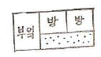
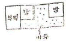
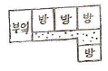
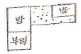
(정답률: 69%)
8. 공장건축의 지붕형태에 대한 설명 중 옳지 않은 것은?
- 뾰족지붕은 어느 정도 직사광선을 허용하는 단점이 있다.
- 솟음지붕은 채광 및 환기에 적합하다.
- 채광창을 서향으로 한 경우 하루종일 변함없는 조도가 제공된다.
- 샤렌구조에 의한 지붕은 기둥이 적게 소요되는 장점이 있다.
(정답률: 80%)
9. 초고층 사무소 건물에 대한 설명으로 옳지 않은 것은?
- 대규모 교통수요에 대한 대책이 요구된다.
- 일조장애, 경관의 차단 등의 유려가 있다.
- 설비관계의 집약으로 방재(防災)에 유리하다.
- 도시의 스카이라인에 변화를 줄 수 있다.
(정답률: 71%)
10. 학교건축에서 단층교사의 이점이 아닌 것은?
- 재해시 피난상 유리하다.
- 채광 및 환기에 유리하다.
- 학습활동을 실외에 연장할 수가 있다.
- 전기,급배수,난방 등을 위한 배선ㆍ배관의 집약이 용이하다.
(정답률: 83%)
11. 상점건축의 진열창 계획에 대한 설명 중 옳은 것은?
- 밝은 조도를 얻기 위하여 광원을 노출한다.
- 내부 조명은 전반 조명만 사용하는 것을 원칙으로 한다.
- 진열창의 내부 조도를 외부보다 낮게 하여 눈부심을 방지한다.
- 외부에 면하는 진열창의 유리로 페어 글라스를 사용하는 경우 결로 방지에 효과가 있다.
(정답률: 49%)
12. 사무실 건물에서 코어 내 각 공간의 위치관계에 대한 설명 중 옳지 않은 것은?
- 계단과 엘리베이터 및 화장실은 가능한 한 접근 시킬 것
- 코어내의 공간과 임대사무실 사이의 동선이 간단할 것 l
- 엘리베이터 홀은 출입구문에 인접하여 바싹 접근해 있도록 할 것
- 엘리베이터는 가급적 중앙에 집중될 것
(정답률: 92%)
13. 다음 중 대단위 아파트단지의 건물 배치계획에 있어서 남북간 인동간격의 결정요소와 가장 관계가 먼 것은?
- 건축물의 방위각
- 대지의 경사도
- 건축물의 동서길이
- 일조시간
(정답률: 96%)
14. 다음 중 무창공장에 대한 설명으로 옳지 않은 것은?
- 작업 중 실내에서 발생하는 소음이 저하된다.
- 유창공장에 비하여 건설비가 싸다.
- 인공조명으로 균일한 조도를 얻을 수 있다.
- 온ㆍ습도 조정의 유지비가 적게 든다.
(정답률: 84%)
15. 현대주택 설계의 방향으로 옳지 않은 것은?
- 건강하고 쾌적한 인간본래의 생활을 되찾는 것이 요구된다.
- 평면기능상으로 주부의 동선을 최소한 단축한다.
- 가족의 생활을 희생시키는 형식적이고 외적인 요인들을 제거하여야 한다.
- 전통적인 한식의 좌식생활 위주로 계획하는 것이 좋다.
(정답률: 81%)
16. 상점 계획에서 파사드(facade)와 숍 프론트(shopfront)의 계획요소와 가장 거리가 먼 것은?
- 전면 도로의 크기
- 인상적이고 개성적인 디자인
- 대중성
- 상점 내로의 유인성
(정답률: 49%)
17. 주택의 식당계획에서 LDK형의 의미로 가장 알맞은 것은?
- 별도의 거실을 두고 부엌의 일부에 식당을 설치한 형태
- 별도의 부엌을 두고 거실과 식당을 겸용하는 형태
- 거실,식당,부엌을 개방된 하나의 공간에 배치한 형태
- 식당,부엌, 다용도실을 개방된 하나의 공간에 배치한 형태
(정답률: 77%)
18. 사무소 건축의 코어형식 중 중심코어형에 대한 설명으로 옳지 않은 것은?
- 바닥면적이 큰 경우에는 사용할 수 없다.
- 구조코어로서 바람직한 형식이다.
- 외관이 획일적일 수 있다.
- 대여 빌딩으로서 경제적인 계획을 할 수 있다.
(정답률: 93%)
19. 주택의 부엌과 식당 계획시 가장 중요하게 고려해야 할 사항은?
- 조명배치
- 작업동선
- 색채조화
- 수납공간
(정답률: 87%)
20. 다음 중 고층 사무소건물의 층고를 결정하는데 가장 영향이 큰 것은?
- 천장내 설비공간의 크기
- 엘리베이터의 대수
- 기둥의 크기
- 피난계단의 형태
(정답률: 73%)
2과목: 건축시공
21. 다음 중 콘크리트 봉형진동기 사용에 관한 내용으로 옳은 것은?
- 망입유리는 차손되더라도 파편이 튀지 않으므로 진동에 의해 파손되기 쉬운 곳에 사용된다. 진동 적정시간은 콘크리트 표면에 페이스트가 얇게 떠오를 정도로 한다.
- 진동기 삽입간격은 진동간격을 고려하여 약 80cm 이상으로 한다.
- 콘크리트가 묽은 반죽일 때 진동다짐의 효과가 가장 크다.
- 진동기는 부어넣는 층의 바닥까지 경사지어 삽입한다.
(정답률: 66%)
22. 다음 중 강화유리에 관한 설명으로 옳지 않은 것은?
- 보통 판유리에 비하여 3~5배 정도 강도가 크다.
- 내열성이 있어 200℃ 정도에서도 파손되지 않는 다.
- 현장가공과 절단이 되지 않는다.
- 파손된 경우 파편이 날카로워 안전상 출입구문이나 창유리등에는 사용하지 않는다.
(정답률: 92%)
23. 콘크리트 이어붓기 방법에 대한 기술 중 옳지 않은 것은?
- 기둥은 바닥 및 기초의 상단에서 수평으로 한다.
- 캔틸레버로 내민보다 바닥판은 중앙부에서 수직으로 한다.
- 보다 슬래브는 전단력이 가장 작은 스팬의 중앙부에서 수직으로 한다.
- 아치(arch)의 이음은 아치축에 직각으로 한다.
(정답률: 60%)
24. 굳지 않는 콘크리트 타설시 거푸집의 측압에 관한 설명 중 옳은 것은?
- 슬럼프가 클수록 측압은 크다.
- 부어넣기 속도가 빠를수록 측압은 작아진다.
- 온도가 높을수록 측압은 커진다.
- 거푸집의 강성이 작을수록 측압은 커진다.
(정답률: 63%)
25. 지반의 내력 측정시 단기하중에 대한 허용지내력을 산정하는 방법으로 옳은 것은?
- 장기하중에 대한 허용지내력의 1/2로 한다.
- 장기하중에 대한 허용지내력의 1배로 한다.
- 장기하중에 대한 허용지내력의 2배로 한다.
- 장기하중에 대한 허용지내력의 2.5배로 한다.
(정답률: 76%)
26. 다음 중 도장공사에 사용되는 도료에 대한 설명으로 옳지 않은 것은?
- 수성페인트는 내구성과 내수성이 우수하나 내알칼리성과 작업성은 떨어지는 단점이 있다.
- 유성페인트는 내알칼리성이 약하기 때문에 콘크리트면보다 목부와 철부도장에 주로 사용된다.
- 클리어래커는 내부목재면의 투명도장에 Tm이며 우아한 광택이 난다.
- 바니시는 건조가 빠르고 주로 옥내 옥부의 투명 마무리에 쓰인다.
(정답률: 56%)
27. 다음 중 커튼윌의 판넬 부착 방식에 따른 분류에 속하지 않는 것은?
- 멀리온 방식
- 슬라이딩 방식
- 로킹 방식
- 고정 방식
(정답률: 69%)
28. 다음 중 타일에 대한 설명으로 옳지 않은 것은?
- 자기질 타일은 용도상 내ㆍ외장 및 바닥용으로 사용되며 소성온도는 1,300∼1,400℃이다.
- 석기질 타일은 현대건축의 벽화타일이나 이미지 타일로서 폭넓게 활용되고 있다.
- 도기질 타일은 내구성·내수성이 강하여 옥외나 물기가 있는 곳에 주로 사용된다.
- 티타늄타일은 500℃ 전후의 고온에서도 그 성질이 변하지 않으며 내식성도 우수하다.
(정답률: 80%)
29. 고로슬래그 미분말을 혼화재로 사용한 콘크리트의 특징에 대한 설명으로 옳지 않은 것은?
- 초기강도가 낮다.
- 블리딩이 적고 유동성이 향상된다.
- 알칼리 골재반응이 촉진된다.
- 콘크리트의 온도상승 억제효과가 있다.
(정답률: 62%)
30. 기준점(Bench mark)에 관한 다음 설명 중 옳지 않은 것은?
- 신축할 건축물의 높이의 기준을 삼고자 설정하는 것이다.
- 기준점의 위치는 수시로 이동가능한 사물에 설치하는 것이 좋다.
- 바라보기 좋은 곳에 적어도 2개소 이상 설치해 두어야 한다.
- 공사가 완료된 뒤로도 건축물의 침하, 경사 등을 확인하기 위하여 사용되는 경우가 있다.
(정답률: 87%)
31. 지하 구조체를 지상에서 구축하고 그 밑부분을 파내려 가면서 지하부에 위치시키는 기초 공법은?
- 심초공법
- 개방잠함공법
- 웰포인트공법
- 톱다운공법
(정답률: 52%)
32. 다음 중 도막 방수의 특성이 아닌 것은?
- 연시율이 뛰어나며 경량의 장점이 있다.
- 방수층의 내수성,내화성이 우수하다.
- 균일한 두께를 확보하기 어렵고 두꺼운 층을 만들 수 없다.
- 누수사고가 생기면 아스팔트 방수에 비해 보수가 어려운 단점이 있다.
(정답률: 57%)
33. 그림과 같은 모래질 흙의 줄기초파기에서 파낸 흙을 6톤 트럭으로 운반하려고 할 때 필요한 트럭의 대수로 옳은 것은?(단, 흙의 부피증가는 25%로 하며 모래질 흙의 단위중량은 1,8t/m3)
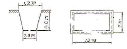
- 10대
- 12대
- 15대
- 18대
(정답률: 88%)
34. 지하실 방수법 중 안방수와 비교한 바깥방수의 특징이 아닌 것은?
- 수압이 크고 깊은 지하실에 유리하다.
- 공사기일에 제약을 받는다.
- 시공이 간편하고 결함의 발견 및 보수가 용이하다.
- 보통 시트방수나 아스팔트 방수가 많이 쓰인다.
(정답률: 66%)
35. 기초말뚝 박기공사에서 기성콘크리트 말뚝간격의 최소한도로 옳은 것은? (단, d는 말뚝직경임)
- 4d
- 3d
- 2.5d
- 2d
(정답률: 80%)
36. 다음 중 지명경쟁 입찰에 대한 설명으로 옳은 것은?
- 기회는 균등하지만 과다경쟁을 초래 할 수 있다.
- 양질의 시공 결과를 얻을 수 있다.
- 공사비가 낮아진다.
- 담합의 염려가 있다.
(정답률: 70%)
37. 다음 중 수량산출시의 할증율로 옳은 것은?
- 이형철근 : 3%
- 원형철근 : 7%
- 대형형강 : 5%
- 강판 : 5%
(정답률: 82%)
38. 다음 중 철근 콘크리트의 피복두께를 유지하는 목적과 가장 거리가 먼 것은?
- 화재로부터의 철근보호
- 철근의 부식방지
- 철근과 콘크리트의 부착응력 확보
- 콘크리트의 동해 방지
(정답률: 77%)
39. 다음 중 네트워크 공정표에 대한 설명으로 옳지 않은 것은?
- CPM공정표는 네트워크 공정표의 한 종류이다.
- 요소작업의 시작과 작업기간 및 작업완료점을 막대그림으로 표시하 것이다.
- PERT공정표는 일정계산시 단계(Event)를 중심으로 한다.
- 공사계획의 전모와 공사전체 파악이 용이하다.
(정답률: 90%)
40. 다음 중 알루미늄에 대한 설명으로 옳지 않은 것은?
- 산이나 알칼리 및 해수에 침식되지 않는다.
- 알루미늄박(箔)을 이용하여 단열재, 흡음판을 만들기도 한다.
- 알루미늄의 영계수는 약 7300 kg/mm2정도이다.
- 알루미늄의 표면처리에는 양극산화 피막법 및 화학적 산화피막법이 있다.
(정답률: 75%)
3과목: 건축구조
41. 다음 중 역학적 구성양식에 의한 건축구조의 분류에 속하지 않는 것은?
- 조적식 구조
- 가구식 구조
- 일체식 구조
- 습식 구조
(정답률: 67%)
42. 그림과 같은 트러스에서 C부재의 부재력은? (단, 보기는 +는 인장, -는 압축)
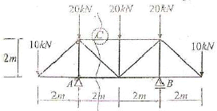
- 0
- 20kN(+)
- 40kN(-)
- 80kN(+)
(정답률: 56%)
43. 그림과 같은 T형보에서 양측 슬래브의 중심 거리가 6m 이고, 보의 경간이 8m일 때, 인장 철근비 Pt는?(단, D19의 단면적은 286.7mm2임)
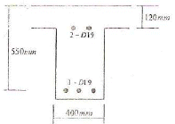
- 0.00035
- 0.00045
- 0.00078
- 0.00087
(정답률: 52%)
44. 길이 4m인 강봉에 재축방향으로 80kN의 인장력을 작용시켰을 때 수직응력 가 153.3MPa, 변형도 ε이 0.00073이었다. 이 강봉의 탄성 계수는?
- 1.6 × 105MPa
- 16 × 105MPa
- 2.1× 105MPa
- 21 × 105MPa
(정답률: 68%)
45. 그림과 같은 보의 A단에 모멘트 M=80kNㆍm가 작용할 때 B단에 발생하는 고정단 모멘트의 크기는?
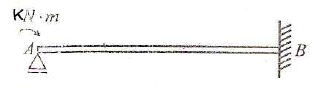
- 20kNㆍm
- 40kNㆍm
- 60kNㆍm
- 80kNㆍm
(정답률: 55%)
46. 다음 중 압축부재에서 세장비를 구할 때 필요 없는 것은?
- 부재 길이
- 단부 지점 조건
- 탄성계수
- 단면 2차 반경
(정답률: 56%)
47. 철근콘크리트 강도설계법에서 처짐을 계산하지 않는 경우, 단순지지된 보의 최소 충(h)으로 적당한 것은? (단, 보의 길이 = 5000mm, 보통콘크리트 사용, fy=400MPa)
- 312.5mm
- 365.2mm
- 412.6mm
- 432.8mm
(정답률: 39%)
48. 보의 폭 b=300m, fck= 21MPa인 단근보를 강도설계법으로 설계하고자 할 때 균형상태에서 이 보의 압축내력은 약 얼마인가?(단, 등가응력블록의 깊이 a =120mm임)
- 536.2kN
- 642.6kN
- 720.4kN
- 825.8kN
(정답률: 43%)
49. 다음 중 점토층의 전단강도를 측정하는 시험은?
- 베인전단시험
- 어스앵커일발시험
- 현장투수시험
- 말뚝재하시험
(정답률: 56%)
50. 강도설계법에서 크리프와 건조수축에 따른 추가 장기처짐은 순간처짐량에 다음의 어느 값을 곱하여 구하는가? (단, T는 시간경과계수, ρ′는 압축철근비이다.)
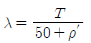
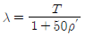
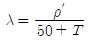
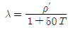
(정답률: 52%)
51. 그림과 같은 구조물의 부정정 차수로 옳은 것은?
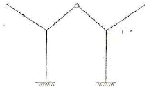
- 1
- 2
- 3
- 4
(정답률: 69%)
52. 인장 이형철근의 정착길이를 보정 계수에 의해 증가시켜야 하는 경우가 아닌 것은?
- 일반콘크리트
- 에폭시 도막철근
- 경량콘크리트
- 상부 철근
(정답률: 78%)
53. 철근콘크리트 보에서 인장철근비가 균형철근비보다 큰 경우에 발생될 수 있는 현상은?
- 인장측 철근이 콘크리트보다 먼저 허용응력에 도달한다.
- 중립축이 상부로 올라간다.
- 연성파괴가 나타난다.
- 콘크리트의 압축파괴가 나타난다.
(정답률: 27%)
54. 강도설계법에 의한 철근콘크리트 플랫 슬래브 설계시 지판의 슬래브 아래로 돌출한 두께는 돌출부를 제외한 슬래브 두께가 300mm일 때 최소 얼마이상으로 하여야 하는가?
- 20mm
- 40mm
- 60mm
- 75mm
(정답률: 30%)
55. 강도설계법에 의한 첡근콘크리트 직사각형 보에서 콘크리트가 부담할 수 있는 공칭전단강도는? (단, fck=24MPa, b=300mm, d=500mm이다.)
- 69.3kN
- 97.5kN
- 116.4kN
- 122.5kN
(정답률: 59%)
56. 한변이 a인 정사각형 도형의 단면2차반경값은 원형단면의 경우의 몇 배인가? (단, 각 도형의 면적은 동일하며, 단면2차반경은 도심축에대해서 구한다.)
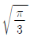
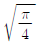
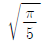
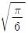
(정답률: 46%)
57. 다음 그림의 구조물에서 A점에 생기는 휨모멘트의 크기는?
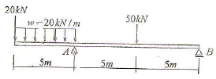
- -100kNㆍm
- -200kNㆍm
- -350kNㆍm
- -600kNㆍm
(정답률: 57%)
58. 그림과 같이 슬래브 상부근이 90˚ 표준갈고리로 벽체에 인장 정착될 경우 기본정착길이로 알맞은 것은? (단, D13철근사용. D13의 공칭지름:12.70mm )(오류 신고가 접수된 문제입니다. 반드시 정답과 해설을 확인하시기 바랍니다.)
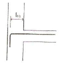
- 230mm
- 240mm
- 250mm
- 260mm
(정답률: 19%)
59. 기둥에 편심 축하중이 작용할 때의 상태를 옳게 설명한 것은?
- 압축력만 작용하여 휨모멘트는 없다.
- 휨모멘트만 작용하며 압축력은 작용하지 않는다.
- 압축력과 휨모멘트가 작용하며 단면내에 인장력이 생기는 경우도 있다.
- 압축력 및 인장력이 작용하며 휨모멘트는 작용하지 않는다.
(정답률: 50%)
60. 원형 단면의 부재에 생기는 최대 전단응력도로 옳은 것은? (단, A는 단면적, V는 전단력)
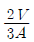
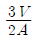
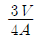
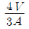
(정답률: 54%)
4과목: 건축설비
61. 다음 중 정전으로 인한 단수의 염려가 있는 급수 방식은?(오류 신고가 접수된 문제입니다. 반드시 정답과 해설을 확인하시기 바랍니다.)
- 수도직결 방식
- 고가탱크 방식
- 압력탱크 방식
- 탱크가 없는 부스터 방식
(정답률: 43%)
62. 다음의 정의에 알맞은 스프링클러헤드의 종류는?
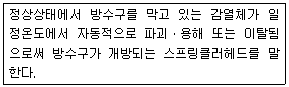
- 방수형스프링클러헤드
- 측벽형스프링클러헤드
- 개방형스프링클러헤드
- 폐쇄형스프링클러헤드
(정답률: 67%)
63. 공기조화방식 중 정풍량 단일덕트방식에 대한 설명으로 옳은 것은?
- 각 실이나 존의 부하변동에 즉각적인 대응이 용이하다.
- 덕트가 2개의 계통이므로 설비비가 많이 든다.
- 냉ㆍ온풍의 혼합손실이 있어 비경제적이다.
- 실내부하가 감소될 경우 송풍량을 줄이면 실내 공기의 오염이 심하다.
(정답률: 33%)
64. 강관용 이음쇠 중 시공 후 배관의 수리ㆍ교체를 편리하게 하기 위해 사용하는 것은?
- 부싱(bushing)
- 유니온(union)
- 티(tee)
- 레듀서(reducer)
(정답률: 70%)
65. 다음과 같은 특징을 갖는 배선 공사는?
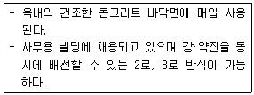
- 금속몰드 공사
- 버스덕트 공사
- 금속덕트 공사
- 플로어덕트 공사
(정답률: 75%)
66. 다음 도면에서 표시된 통기관의 명칭이 옳지 않은 것은?
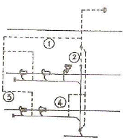
- ①-루프통기관
- ②-신정통기관
- ③-각개통기관
- ④-도피통기관
(정답률: 60%)
67. 어떤 실의 난방부하가 7560W 일 때 증기방열기의 소요 상당방열면적은? (단, 표준상태이며 증기의 표준방열량은 0.756kW/m2임)
- 10m2
- 18m2
- 19m2
- 22m2
(정답률: 49%)
68. 실내에 설치할 방열기기의 선정시 고려할 사항과 가장 거리가 먼 것은?
- 응축수량이 많을 것
- 사용하는 열매종류에 적합할 것
- 실내온도 분포가 균일하게 될 것
- 설치장소에 적합한 디자인과 견고성을 가질 것
(정답률: 56%)
69. 조명설비에서 눈부심(glare)이 발생하는 원인과 가장 거리가 먼 것은?
- 저휘도의 광원
- 순응의 결핍
- 눈에 입사하는 광속의 과다
- 시선 부근에 노출된 광원
(정답률: 57%)
70. 인터폰설비의 접속방식에 따른 분류에 속하지 않는 것은?
- 프레스토크식
- 모자식
- 복합식
- 상호식
(정답률: 62%)
71. BOD 제거율을 나타내는 식은?
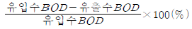
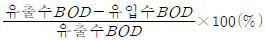
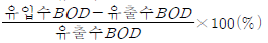
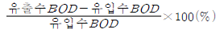
(정답률: 82%)
72. 길이가 30m, 관경이 80mm인 급수관에 물이 2m/sec의 속도로 흐를 때 압력손실은? (단, 관마찰계수 0.02)
- 15Pa
- 25Pa
- 35Pa
- 45Pa
(정답률: 29%)
73. 증기난방에 관한 설명 중 옳지 않은 것은?
- 실내 상하온도차가 크다.
- 부하변동에 따른 실내방열량의 제어가 곤란하다.
- 계통별 용량제어가 곤란하다.
- 예열시간이 길고 열매온도가 낮다. A-11-8-2530
(정답률: 72%)
74. 열손실 계산에 있어서 난방 부하를 줄이기 위한 방법이 아닌 것은?(오류 신고가 접수된 문제입니다. 반드시 정답과 해설을 확인하시기 바랍니다.)
- 2중창 설치
- 축열조 설치
- 단열재 설치
- 회전문 설치
(정답률: 40%)
75. 다음 중 분전반의 외함 크기를 결정하는 요소와 가장 거리가 먼 것은?
- 주차단기의 용량
- 분기차단기의 용량
- 고조파의 크기
- 사용장소
(정답률: 47%)
76. 다음 중 요구되는 조도기준이 가장 높은 거실의 용도는?
- 회의
- 독서
- 설계
- 식사
(정답률: 73%)
77. 양수량이 2m3/min인 펌프에서 회전수를 원래보다 20%증가시켰을 경우 양수량은 얼마로 되는가?
- 1.7m3/min
- 2.4m3/min
- 2.9m3/min
- 3.5m3/min
(정답률: 56%)
78. LPG 용기의 보관온도는 최대 얼마 이하로 하여야 하는가?
- 20˚C
- 30˚C
- 40˚C
- 50˚C
(정답률: 77%)
79. 사용 용도에 따른 스위치의 연결이 옳지 않은 것은?
- 응접실 - 마그넷 스위치
- 계단실 - 3로 스위치
- 양수펌프 - 플로트 스위치
- 분전반 - 나이프 스위치
(정답률: 38%)
80. 사용 용도에 따른 스위치의 연결이 옳지 않은 것은?
- 증기의 포화온도는 압력의 변화에 따라 변한다.
- 포화증기의 비체적은 증기의 압력이 증가할수록 증가한다.
- 증기의 압력이 증가하면 포화증기가 갖게 되는 잠열은 조금씩 감소하게 된다.
- 건포화증기를 다시 가열하면 증기의 온도는 포화온도 보다 높아지며 체적은 더욱 증가한다.
(정답률: 28%)
5과목: 건축관계법규
81. 비상용승강기의 승강장 바닥면적은 비상용승강기 1대에 대하여 최소 얼마 이상으로 하여야 하는가?
- 3m2
- 5m2
- 6m2
- 9m2
(정답률: 79%)
82. 다음 중 비상용승강기의 승강장에 설치하는 배연 설비의 구조와 관련된 기준 내용으로 옳지 않은 것은?
- 배연구가 외기에 접하지 아니하는 경우에는 배연기를 설치할 것
- 배연구는 평상시에는 열린 상태를 유지하고, 배연에 의한 기류에 의해 닫히도록 할 것
- 배연기에는 예비전원을 설치 할 것
- 배연기는 배연구의 열림에 따라 자동적으로 작동하고, 충분한 공기배출 또는 가압능력이 있을 것
(정답률: 66%)
83. 공작물을 축조할 특별자치도지사 또는 시장·군수·구청장에게 신고를 하여야 하는 대상 공작물에 속하는 것은?
- 장식탑
- 광고탑
- 기념탑
- 굴뚝
(정답률: 34%)
84. 다음의 건축물 층수 산정과 관련된 기준 내용 중( )안에 알맞은 것은?
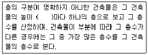
- 2.4미터
- 3미터
- 4미터
- 4.5미터
(정답률: 79%)
85. 다음 중 제2종 근린생활시설에 속하는 것은?
- 독서실
- 유치원
- 우체국
- 이용원
(정답률: 53%)
86. 건축물의 피난층 또는 피난층의 승강장으로부터 건축물의 바깥쪽에 이르는 통로에 관련 규정에 의한 경사로를 설치하여야 하는 대상 건축물이 아닌것은?
- 교육연구 및 복지시설 중 학교
- 승강기를 설치하여야 하는 건축물
- 제1종 근린생활시설 중 마을공회당
- 연면적이 3,000m2인 판매 및 영업시설
(정답률: 46%)
87. 승용승강기 설치기준에서 6층 이상의 거실면적의 합계가 같을 때 설치 대수가 다르게 적용되는 기준은?
- 건축물의 용도
- 건축물의 층수
- 건축물의 연면적
- 건축물의 높이
(정답률: 59%)
88. 주차장의 주차단위구획 기준으로 옳은 것은?(단, 평행주차형식, 일반형)
- 너비 1.7m 이상, 길이 4.5m 이상
- 너비 2.0m 이상, 길이 6.0m 이상
- 너비 2.5m 이상, 길이 5.1m 이상
- 너비 3.3m 이상, 길이 5.0m 이상
(정답률: 79%)
89. 주차전용건축물의 경우 주차장 외의 용도가 업무 시설로 사용될 때 건축물의 연면적 중 주차장으로 사용되는 비율은 최소 얼마 이상이어야 하는가?
- 70%
- 80%
- 90%
- 95%
(정답률: 64%)
90. 다음 중 계단의 설치기준 내용으로 옳지 않은 것은?
- 높이 3m를 넘는 계단에는 높이 3m이내마다 너비 1.2m이상의 계단참을 설치할 것
- 높이가 1.5m를 넘는 계단 및 계단창의 양옆에는 난간(벽 또는 이에 대치되는 것을 포함한다)을 설치할 것
- 너비가 3m를 넘는 계단에는 계단의 중간에 너비 3m이내마다 난간을 설치할 것
- 초등학교의 계단인 경우 계단 및 계단창의 너비는 150cm 이상으로 할 것
(정답률: 56%)
91. 허가권자가 가로구역을 단위로 하여 건축물의 최고 높이를 지정ㆍ공고 할 때 고려사항이 아닌 것은?
- 해당 가로구역이 접하는 도로의 너비
- 해당 가로구역을 통과하는 모든 차량의 통행량
- 도시미관 및 경관계획
- 해당 가로구역의 상·하수도 등 간선시설의 수용능력
(정답률: 79%)
92. 다음 중 노외주차장의 출구 및 입구를 설치할 수 없는 곳은 ?(단, 노외주차장의 주차대수는 100대이다.)
- 유치원의 출입구로 25m 떨어진 도로의 부분
- 종단 구배가 12%인 도로
- 육교에서 10m 떨어진 도로의 부분
- 너비 6m인 도로
(정답률: 42%)
93. 건축물이 있는 대지는 관련 기준에 못 미치게 분할할 수 없는데, 다음 중 해당 관련 기준에 속하지 않는 것은?
- 일조 등의 확보를 위한 건축물의 높이제한
- 대지안의 공지
- 건축물의 용도
- 건축물의 용적률
(정답률: 52%)
94. 다음 중 용도변경과 관련된 시설군과 해당 시설군에 속하는 건축물의 용도의 연결이 옳지 않은 것은?
- 산업 등 시설군 - 운수시설
- 전기통신시설군 - 발전시설
- 문화집회시설군 - 판매시설
- 교육 및 복지시설군 - 의료시설
(정답률: 71%)
95. 다음 중 자주식 주차장에 속하지 않는 것은?
- 지하식
- 지평식
- 기계식
- 건축물식
(정답률: 49%)
96. 건축물의 옥상에 헬리포트를 설치하여야 하는 대상 건축물 기준은?(단, 지붕을 평지붕으로 하는 경우)
- 층수가 8층 이상인 건축물로서 8층 이상인 층의 바닥 면적의 합계가 8000m2 이상인 건축물
- 층수가 10층 이상인 건축물로서 10층 이상인 층의 바닥 면적의 합계가 8000m2 이상인 건축물
- 층수가 11층 이상인 건축물로서 11층 이상인 층의 바닥 면적의 합계가 10000m2 이상인 건축물
- 층수가 15층 이상인 건축물로서 15층 이상인 층의 바닥 면적의 합계가 10000m2 이상인 건축물
(정답률: 70%)
97. 일반주거지역내에 높이 7.5m의 2층 주택을 그림과 같이 건축할 경우 도로 경계선으로부터 후퇴해야 할 최소한의 거리(x)는?
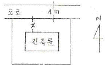
- 0m
- 1.0m
- 1.5m
- 3.0m
(정답률: 48%)
98. 시설면적이 900m2인 제2종 근린생활시설에 설치하여야 하는 부설주차장의 최소 주차 대수는?
- 3대
- 4대
- 5대
- 6대
(정답률: 41%)
99. 연면적의 합계가 5,000m2인 건축물의 대지에 공개 공지 또는 공개 공간을 확보하여야 하는 대상 건축물에 속하지 않는 것은?(단, 건축조례로 정하는 건축물 제외)
- 종교시설
- 문화 및 집회시설
- 의료시설
- 업무시설
(정답률: 57%)
100. 다음 그림과 같은 대지의 건축법상 대지면적은?
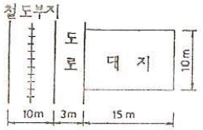
- 120m2
- 130m2
- 140m2
- 150m2
(정답률: 62%)